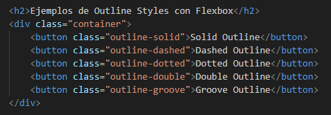
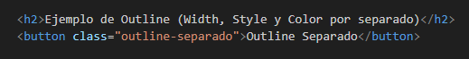
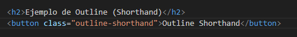

Es una propiedad similar al border, con la caracteristica de que no afecta en el modelo de caja al tamaño,
ni a la posicion, se dibuja fuera del borde, su uso principal es el enfoque de elemntos como botones.NO FORMA PARTE
DEL MODELO DE CAJA
Esta propiedad no permite la modificacion de cada uno de los lados; top, right, bottom, left
Outline presenta varias propiedades, entre ellas con diferentes valores, son las siguientes:
Se encarga del tamaño del grosor del contorno, como ya vimos se pueden usar medidas relativas o fijas
Define el contorno del outline, es muy similar al border, y tambien usa solid, dashed y doted.
El siguiente es un ejemplo de los diferentes usos de outline-style:
Define el color usando los valores que se usaban tambien en margin por nombres, codigos hexadecimales, RGB,
RGBA, etc.
El siguiente es un ejemplo de su aplicacion en HTML, CSS y en el Browser:
Esta propiedad resume las tres anteriores en una sola linea, pudiendo definir, el grosor, el estilo,
y el color en una sola linea
El siguiente es un ejemplo de este shortHand en el HTML, CSS y Browser
Permite ajustar el contorno ya sea hacia adentro o hacia afuera, los valores negativos, lo ajustan, hacia adentro
y los positivos hcia afuera, siempre llevandose el grosor de la linea
En las siguientes imagenes se puede apreciar la aplicacion del codigo en HTML, CSS y el browser, mostrando
asi el uso de el offset hacia afura y hacia adentro: